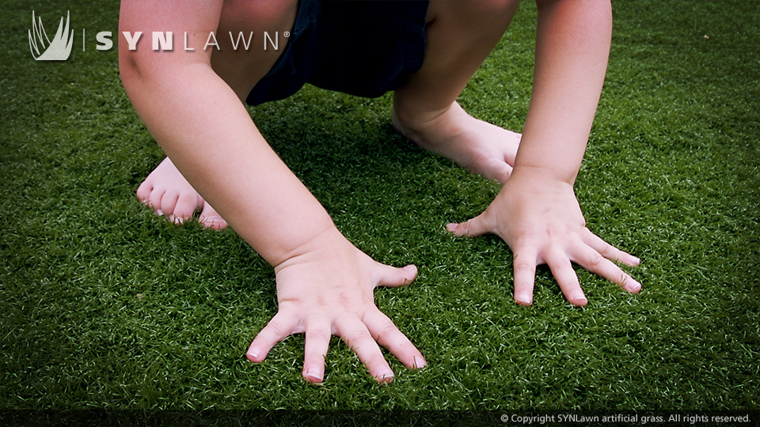
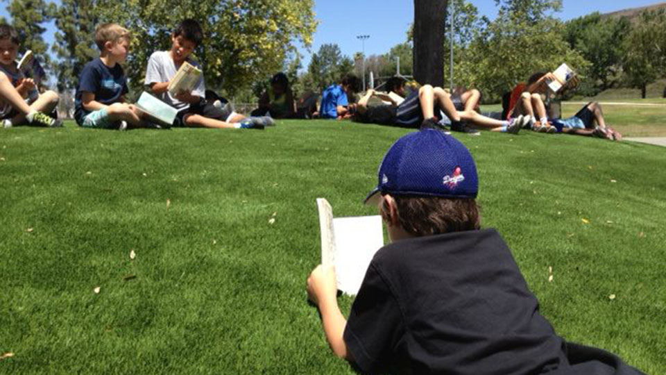
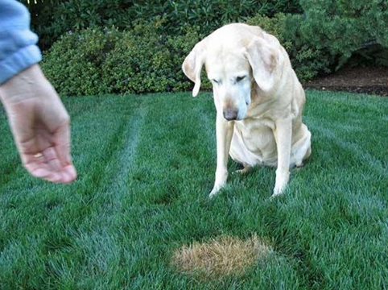

Its official, California’s AB-349 authored by Assemblywoman Lorena Gonzalez (D-San Diego) was signed yesterday by Governor Jerry Brown. What does this mean for all you California homeowner’s governed by a homeowners association (HOA)? You are now free to install artificial turf in your yard without fear of reproach or fines! Synthetic turf is now included among a wide variety of drought tolerant landscaping as it can directly reduce outdoor water use to meet the Governor’s mandated 25% water use reduction across the entire State of California.
Assemblywoman Gonzalez is quoted saying “Across the state, Californians are making great strides to reduce their water use and hit aggressive benchmarks for conservation, and this new common sense law will give homeowners one more way to save as this drought continues. The grass may be fake, but the amount of water a homeowner can save by installing it is very real.”
California Homeowners are eager to have green in their yard again. We have received numerous calls this year from clients asking us to send samples and brochures so that they could present their findings to their HOA only to be turned away. This scenario is now a thing of the past.
You no longer have to accept the infamous saying “brown is the new green” out here in California. Tired of looking at that brown dead lawn for the past few years? Satisfy yourself, your pets, your neighbors and our state by installing a lush, estate quality green lawn or a gorgeous and fun putting green that will stand the test of time while you continue to save on your water bill.
When it comes to your kids, nothing is more important than their safety. When it comes to selecting the perfect play set, safety is always your number one concern. After selecting your kids’ play set, consider the playground surface underneath. What is underneath the playground surface is just as imporant as what is on top.
Most injuries on playgrounds occur as the result of a fall on surfaces that are abrasive, hard or just plain unsafe. That’s where the SYNLawn Playground System comes in. We’ve developed the safest, most consistent playground surface anywhere. Our system is designed for all types of playground equipment and protects children from falls as high as 10-feet which meets IPEMA standards of citical fall height (CFH) rating and CSA approved fall attenuation.
There are many options available for playground surfaces. Mulch, pea gravel, rubber, and other artificial turf products have been used for playgrounds. However, when it comes to your children’s safety and enjoyment, none of those systems can compare to the SYNLawn Playground System.

Traditional options often fall short when it comes to consistent and lasting safety protection. Surfaces constructed of mulch, gravel or sand can have a rapidly degrading safety level if not maintained frequently. High foot traffic areas such as those circling the merry-go-rounds, under the swings or at the landing of a slide tend to displace the material exposing the hard ground underneath.
While rubber surface playgrounds do offer more consistent protection they do raise a host of concerns. In the summer rubber absorbs heat and can create a very hot or unplayable surface during the peak hours of recess. In the winter rubber becomes hard and brittle from the cold which compromises the integrity of the protection it offers.
The SYNLawn Playground System offers consistent, low maintenance and lasting safety integrity in high traffic areas, in any weather, at required heights, and under all types of play equipment. On top of it all, you and your children can enjoy the look and feel of beautiful green grass
♦ ASTM tested and IPEMA certified
♦ ASTM HIC approved tested
♦ Non abrasive
♦ SYNLawn is soft to the touch and easy on the skin
♦ No grass stains
♦ Kids stay clean and out of trouble when mom goes to wash their clothes
♦ Non-allergenic
♦ Happier healthier kids - allergies caused by natural grass are a thing of the past
♦ Superior drainage
♦ SYNLawn drains at a rate of 30-inches per hour and is always ready for play, even immediately after a rainstorm
♦ Stable in all climates
♦ Winter, spring, summer or fall, SYNLawn gives you protection all year round
♦ Easily replaceable trample zones
♦ Replace only the high-traffic zones without replacing the entire playground surface
SYNLawn is the logical choice for areas where natural grass is problematic due to extreme sun, shade, soil conditions, slopes, access restrictions, pests, allergies, and many other reasons.
The SYNLawn brand product line includes several different varieties of artificial grass styles for commercial and residential applications including landscaping, pet areas, play areas, and uncommon areas such as rooftops and patio decks. No matter what the project is, SYNLawn is proud to be able to offer a wide variety that fits the needs of every customer!
Due to the extremely dry conditions in California, SYNLawn Bay Area is finding ways to install our one of a kind synthetic turf in limitless applications, including, but not limited to:
residential lawns, commercial common areas, and commercial landscapes.
roadway medians, commercial common areas, poolside areas and parks.
dog runs, pet areas, kennels, dog parks and backyards.
backyard putting greens, bocce ball courts, playgrounds and pet areas.
rooftops, terraces, patios and indoor applications like shopping malls or set displays.
We went out to Dalton, GA for SYNLawn distributor training and to tour SYNLawn's manufacturing facilities and was duly impressed. Being part of a vertically integrated manufacturer in itself is impressive. Seeing it first hand is astounding. Millions of square feet of warehouse space, rows and rows of yarn, thatch and grass rolls as far and as high as the eye can see… and all of it made in-house.
At one facility we watched yarn get made, dyed, rolled up into massive spindles and sewn into the primary backing. At another facility just up the road we watched our secondary backing get applied and melted to the primary backing and yarn.
At another facility just up the road we visited where our cut out turf logos and GreenMakers get manufactured.
Finally, at the Crystal Products warehouse we watched our massive rolls of turf get stored, quality checked, cut to fill orders and re-wrapped for shipping. The synthetic turf business is amazing.
Crystal Products controls the manufacturing process from “yarn to yard” and has been around for over 40 years and is 100% Made in the USA. We offer the strongest 15 year product warranty on the market.
Another highlight of our tour was visiting our R&D department. They had equipment that could age our grass 15 years over a two week period. As the leader in the industry, SYNLawn has led the way in innovations and were the first to introduce Heat Block Technology, 100% nylon products, our Enviroloc system, which incorporates soy to replace petroleum based products in our backing system and more. We are constantly testing and moving toward the next innovation in synthetic turf.
We were also honored to meet our corporate team including our CEO Heard Smith who is also an incumbent board member of the Synthetic Turf Council (STC). As for our corporate team, all I can say is they are all anyone could ask for in running a 5 star national operation. As a distributor we feel like part of the team and family. They offer the best support anyone could ask for.
When you choose SYNLawn, you are choosing a team committed to quality, support, an outstanding product and an excellent customer experience.
Synthetic grass and artificial turf have wonderful benefits they bring to every installation. You certainly won't have to mow it, again! Think of the impact you will have on reducing your own carbon footprint and use of harmful chemicals!
SYNLawn is extremely low maintenance, and, when taken care of, can last an extremely long time.
Originally, sports field projects drove the development of most turf products and the benefits would trickle down to the residential and commercial landscape user, but that has changed. Today's synthetic grass and artificial turf yarns deliver outstanding durability, safety, and value, so many homeowners are opting to have SYNLawn installed in their yards.
Not only are homeowners falling in love with the look and feel of SYNLawn, they are reaping the benefits of zero watering cost, durability, and never having mow or weed their lawn!
Another great benefit of installing SYNLawn is that many of the turfs that you can choose from come with the exclusive HeatBlock technology, which creates a lower rising temperature by reflecting sunlight, and creating a cooler feel.
♦ Zero watering cost
♦ No more mowing the lawn
♦ Zero weeding
♦ HeatBlock Technology means a cooler, more comfortable lawn
♦ Padded systems mean a cushion for falls and roughhousing
♦ Less allergies for children and pets
♦ You will never have to use toxic chemicals to ward away common pests that feed on natural grass
♦ No more yellow pet stains
For more information on SYNLawn, and all of the SYNLawn Synthetic Turf Options available for install, visit SYNLawn Bay Area’s Website: synlawnbayarea.com
With summer right around the corner in Sunny California, it’s going to be a beautiful pool season! While the idea of Summer on its way puts everyone in a good mood, the fact that a lot of those lawns surrounding our customers pools are in dire need of water, or already browned and dead.
SYNLawn knew there was a need for a product that was built specifically for pool and play areas, so they created the EnviroLoc Backing System. This amazing step in the installation of your new SYNLawn will ensure that your SYNLawn stays beautiful for years to come! SYNLawn's exclusive EnviroLoc Backing technology 'Locks In' turf fibers for lasting beauty and a long life span. Engineered using BioCel technology, this system replaces a large portion of petroleum based polymers with biobased polymers created with soybean plants (a renewable resource). SYNLawn then adds Celceram™ (a recycled product of coal combustion) for superior strength and dimensional stability.
We've been finishing project after project to surround our customer's pools with SYNLawn! The look of SYNLawn surrounding your pool, gives your backyard the lush look and feel of your very own private oasis! PLUS: No more slipping and sliding on hard concrete or gravel. Children and pets can play in a softer, safer area around the pool.
The EnviroLoc bi-component primary backing includes two layers of woven backing stitched together while adding a layer of polypropylene fiber in-between. This means you get superior strength and durability.
Together these biobased technologies provide a sturdy anchor for fibers for less “shedding” as well as provide an environmentally responsible approach to artificial grass that conserves Earth’s natural resources and will look great for years to come!
Hiking water prices, brown lawns, short showers and dirty cars. California residents are feeling the effects of this exceptional drought in full force. We are now entering our fourth year of drought.
To add to our woes, the Santa Clara Valley Water District, the East Bay Municipal Utility District and the San Francisco Public Utilities Commission are all considering hiking water rates up to 30 percent higher this year. These water agencies serve about 80% of the Bay Area’s population. Their reason for hiking the rates: they are selling a lot less water as customer’s conserve as a result of the drought. Of course they are reluctant to make such a decision as it directly impacts homeowner’s wallets in a major way. Their job however, is to ensure there is enough clean, safe water to sustain the economy of the Bay Area. Another reason for the potential hike: they are spending more money on drought-related expenses such as buying extra water from outside the Bay Area to help meet demand.
California Governor, Jerry Brown has called on Californians to voluntarily reduce their water usage by 20%. To help ease some of the tension of finding alternative solutions to keeping a beautiful yard, Governor Jerry Brown’s recent state of emergency declaration along with the overall public awareness of the California drought have resulted in some rebate opportunities for California homeowners and businesses.
Be sure to check with your city or local ordinance for rebate programs that may be happening to help you reduce your water consumption.
Water rebates will potentially cover up to $2.50 per square foot for water wise landscaping. Synthetic turf is not only a great alternative to beating the drought, it is also an ideal long term investment in beautifying your yard. Along with reducing your water bill by 60% per year, you can also save on gardener fees and gas to fuel your lawn equipment. On top of it, you no longer have to worry about looking at a brown lawn!
Make the switch to synthetic turf and go with a company you trust. We have been manufacturing and installing turf for over 40 years. Our grass is eco-friendly, 100% recyclable, is backed by a 15 year warranty and looks great all year long!
Your pets will thank you, your children will thank you, and you will thank yourself when you see your green lawn and your water bill significantly reduced for the years to come. On top of that, the State of California thanks you for conserving water while keeping a beautiful yard.
Looking to upgrade your lawn from one that gets spotty, wilts and withers every few years to one that lasts 500% longer and stays beautiful year round? Tired of putting in sod after sod only to find out you can’t water because of a drought? Well we have the solution for you, especially for those of you with pets and those lovely brown grass patches our furry friends tend to leave behind. SYNLawn’s grass can withstand all foot traffic (including dog scratching) and all pet waste. No longer will your dog’s urine cause your grass to brown in spots and wither away. Our grass drains at 30 inches per hour and can handle pooper scoopers just as well. At this point you might be wondering, how do I clean my grass? Your SYNLawn can handle leaf blowing, shop vacuuming, nylon raking and an occasional rinse. We also have a very helpful maintenance guide for further education.
A nice tip we like to share with our clients as well is that many cities in the State of California are offering water rebates to residents who install synthetic turf. For those of you with a stubborn HOA, there is currently a bill in motion that would allow artificial grass in all HOAs in the State of California.
With a grass that will last you 15 + years, reduces your water bill by 60%, is impervious to drought restrictions, looks beautiful year round, includes our innovative HeatBlock technology, what is stopping you from making the switch? With our team of highly qualified installers, we assure you will fall in love with your SYNLawn on day one and will love it for the many years to come.


603 S 8th St. Richmond, CA 94804
Copyright 2015 - SYNLawn Bay Area - All Rights Reserved. CCL# 832713